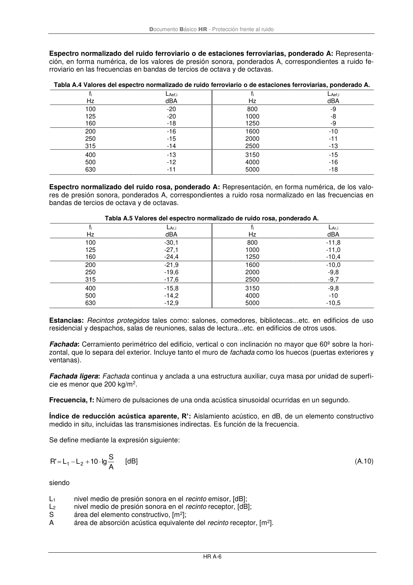
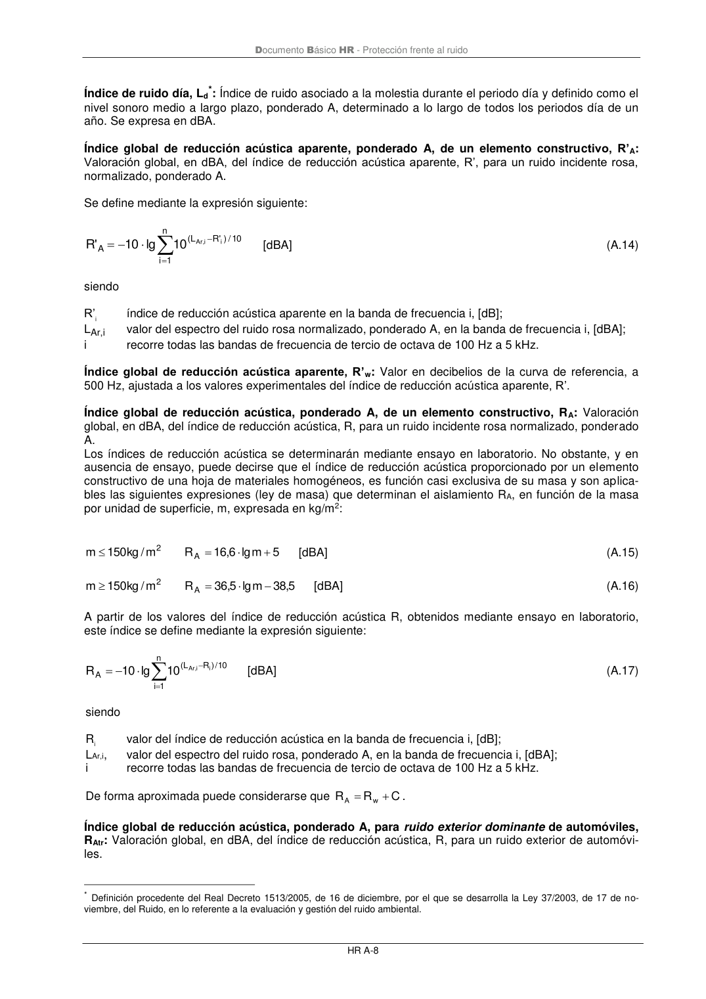

DB-HR · Frecuencia, f: Número de pulsaciones de una onda acústica sinusoidal ocurridas en un segundo. · versión 2019-12-20 · capa oficial
Formatos: JSON compacto · Markdown · PDF fuente
Ámbito del documento · texto del ámbito · documento y tablas
ID técnico a0097 · PDF pág. 48-50 · jerarquía no validada por persona · contrastado con el literal de la página 48 (marcador PDF); no validado por persona · padre: a0092
Documento Básico HR - Protección frente al ruido HR A-6 Espectro normalizado del ruido ferroviario o de estaciones ferroviarias, ponderado A: Representa- ción, en forma numérica, de los valores de presión sonora, ponderados A, correspondientes a ruido fe- rroviario en las frecuencias en bandas de tercios de octava y de octavas. Tabla A.4 Valores del espectro normalizado de ruido ferroviario o de estaciones ferroviarias, ponderado A. fi Hz LAef,i dBA fi Hz LAef,i dBA 100 125 160 -20 -20 -18 800 1000 1250 -9 -8 -9 200 250 315 -16 -15 -14 1600 2000 2500 -10 -11 -13 400 500 630 -13 -12 -11 3150 4000 5000 -15 -16 -18 Espectro normalizado del ruido rosa, ponderado A: Representación, en forma numérica, de los valo- res de presión sonora, ponderados A, correspondientes a ruido rosa normalizado en las frecuencias en bandas de tercios de octava y de octavas. Tabla A.5 Valores del espectro normalizado de ruido rosa, ponderado A. fi Hz LAr,i dBA fi Hz LAr,i dBA 100 125 160 -30,1 -27,1 -24,4 800 1000 1250 -11,8 -11,0 -10,4 200 250 315 -21,9 -19,6 -17,6 1600 2000 2500 -10,0 -9,8 -9,7 400 500 630 -15,8 -14,2 -12,9 3150 4000 5000 -9,8 -10 -10,5 Estancias: Recintos protegidos tales como: salones, comedores, bibliotecas...etc. en edificios de uso residencial y despachos, salas de reuniones, salas de lectura...etc. en edificios de otros usos. Fachada: Cerramiento perimétrico del edificio, vertical o con inclinación no mayor que 60º sobre la hori- zontal, que lo separa del exterior. Incluye tanto el muro de fachada como los huecos (puertas exteriores y ventanas). Fachada ligera: Fachada continua y anclada a una estructura auxiliar, cuya masa por unidad de superfi- cie es menor que 200 kg/m2. Frecuencia, f: Número de pulsaciones de una onda acústica sinusoidal ocurridas en un segundo. Índice de reducción acústica aparente, R’: Aislamiento acústico, en dB, de un elemento constructivo medido in situ, incluidas las transmisiones indirectas. Es función de la frecuencia. Se define mediante la expresión siguiente: A S lg 10 L L ' R 2 1 + − = [dB] (A.10) siendo L1 nivel medio de presión sonora en el recinto emisor, [dB]; L2 nivel medio de presión sonora en el recinto receptor, [dB]; S área del elemento constructivo, [m2]; A área de absorción acústica equivalente del recinto receptor, [m2]. Documento Básico HR - Protección frente al ruido HR A-7 Índice de reducción acústica de un elemento constructivo, R: Aislamiento acústico, en dB, de un elemento constructivo medido en laboratorio. Es función de la frecuencia. Se define mediante la expresión siguiente: A S lg 10 L L R 2 1 + − = [dB] (A.11) siendo L1 nivel medio de presión sonora en el recinto emisor, [dB]; L2 nivel medio de presión sonora en el recinto receptor, [dB]; S área del elemento constructivo, [m2]; A área de absorción acústica equivalente del recinto receptor, [m2]. Índice de reducción acústica por vía indirecta, Rij: Diferencia entre los niveles sonoros de los recintos emisor y receptor, debida a la transmisión acústica por vía indirecta o por flancos. Índice de reducción de vibraciones para caminos de transmisión sobre uniones de elementos constructivos, Kij:. Diferencia entre los niveles medios de velocidad entre ambos lados de la unión, promediada en las dos direcciones, normalizada a la longitud de la unión y a la longitud de absorción equivalente de los elementos a cada lado. Es una magnitud relacionada con la transmisión de energía en una unión de dos elementos constructivos Se define mediante la expresión siguiente: dB 0 D ; dB a a l lg 10 D K situ ,ij,v situ ,j situ ,i ij situ ,ij,v ij + = [dB] (A.12) siendo situ ,ij,v D diferencia de niveles de velocidad promediada en los dos sentidos de propagación para cada camino de transmisión ij sobre la unión, [dB]; ai, situ longitud de absorción equivalente del elemento i medida in situ, [m]; aj, situ longitud de absorción equivalente del elemento j medida in situ, [m]; lij longitud común de la arista de unión entre el elemento i y el j, [m]. Como primera aproximación las longitudes de absorción equivalente pueden tomarse como ai, situ= Si / l0 y aj, situ= Sj / l0, para todo tipo de elementos, con la longitud de acoplamiento de referencia l0 =1 m. Para uniones en las que los elementos de flanco tengan un contacto reducido con el elemento de separación, sólo se considerará la transmisión Ff cuyo valor no será menor que el valor Kij,min, cuya ex- presión viene dada por: + = j i 0 ij min ,ij S 1 S 1 l l lg 10 K [dB] (A.13) siendo ij caminos de transmisión Ff, Fd o Df; l0 = 1 m longitud de la arista de unión de referencia; Si área del elemento excitado i (forjado), [m2]; Sj área del elemento radiante j en el recinto receptor, [m2]. Documento Básico HR - Protección frente al ruido HR A-8 Índice de ruido día, Ld*: Índice de ruido asociado a la molestia durante el periodo día y definido como el nivel sonoro medio a largo plazo, ponderado A, determinado a lo largo de todos los periodos día de un año. Se expresa en dBA. Índice global de reducción acústica aparente, ponderado A, de un elemento constructivo, R’A: Valoración global, en dBA, del índice de reducción acústica aparente, R’, para un ruido incidente rosa, normalizado, ponderado A. Se define mediante la expresión siguiente:


PDF fuente redistribuible: copia fiel enlazada en esta página (SHA256 verificado).